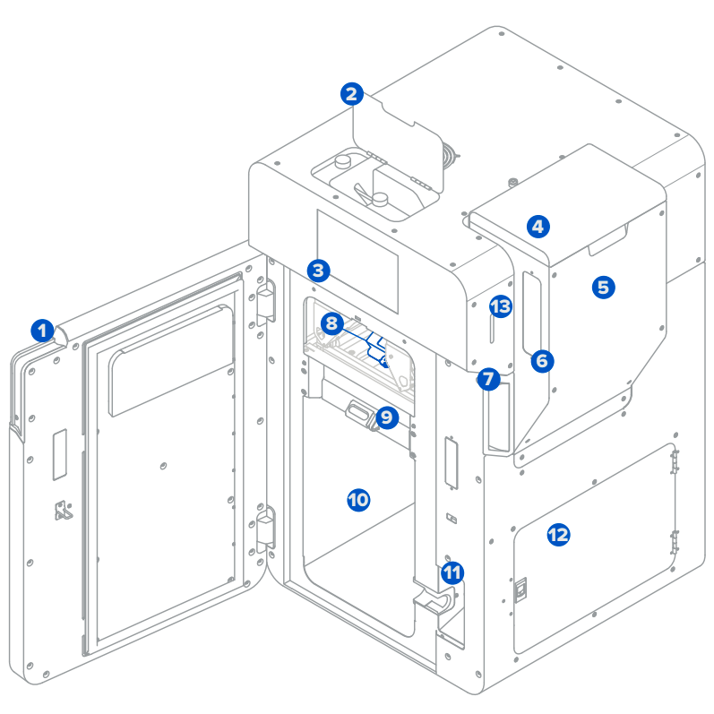
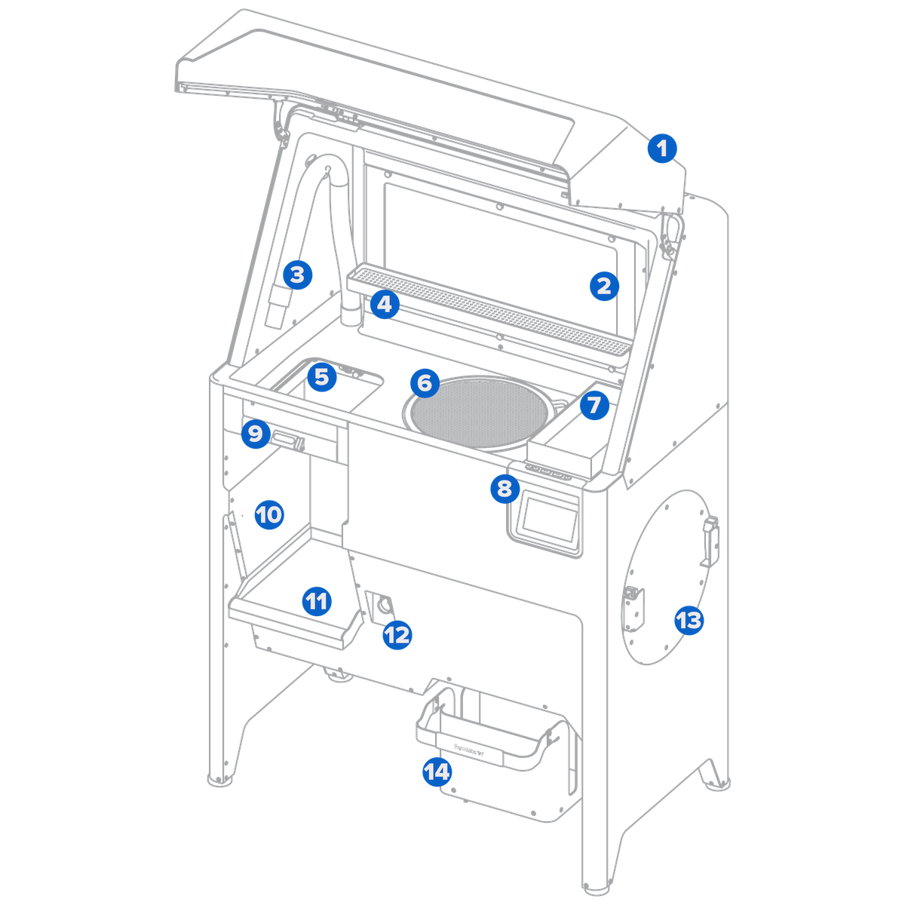

Formlabs Fuse 1
Note
🚧 Under Construction 🚧 Fuse 1 은 현재 수리 받는 중입니다.
Welcome to the documentation for the Formlabs Fuse 1. The Formlabs Fuse 1 is an industrial Selective Laser Sintering (SLS) 3D printer designed to produce robust, functional nylon parts in-house. It brings traditionally expensive, large-scale manufacturing technology into a compact, benchtop-friendly format, eliminating the need for complex support structures.
Here are the documents for Users and Managers:
Technical Specifications
 Fuse1 |
 Sift |
{kind=link}
{kind=link}
Build Volume: \(16.5 \times 16.5 \times 30.0 \text{ cm}^3\)
Operating Temperature: 200°C
Layer Resolution: 100 μm (X, Y) / 110 μm (Z)
Material Cost: ₩1,800,000 / 10 kg (Nylon 12 Powder)
Official Documentation & Manuals
You can download the official manufacturer user guides and operation manuals directly below:
Video Tutorials & Workflows
- Introduction Video:
- Operation & Workflow Videos:
Useful Links & External Resources
- Formlabs Dashboard :
Monitor and manage your 3D printers online. Use this free cloud platform to track active print jobs, monitor material consumables, check remaining service coverage, and receive real-time notifications the moment a print finishes.
- Formlabs SLS Support Center :
Access the main database for Formlabs SLS technical support articles, advanced troubleshooting steps, and continuous software updates.